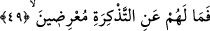
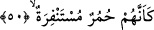

dalıyorduk, din gününü de yalan sayıyorduk.” âyetlerini okur.
İbn Abbas şöyle der: Şüphesiz Hz. Muhammed (a.s.) üç kez şefâat eder. Sonra
melekler, ardından peygamberler, daha sonra babalar, sonra oğullar hep şefâat ederler.
Bunun ardından Allah; “Benim rahmetim kaldı” buyurur ve kendisine cennetin haram
kılındığı kişilerin dışında hiç kimseyi cehennemde bırakmaz. Cehennemliklerden birisi
cennetliklerden birine: “Ey filanca beni tanımıyor musun? Ben sana bir yudum su veren
adamım” der. Bir diğeri: “Ben sana abdest suyu verenim” der. Bir başkası: “Ben sana
bir lokma yedirdim”. Bir diğeri: “Ben sana elbise, hırka giydirdim” der. Cennetlik olan
da ona bu söz üzerine şefâat eder ve onu -ya cehenneme girmeden önce ya da girdikten
sonra- cennete sokar.
49. Böyle iken onlara ne oluyor ki, (hâla) öğütten yüz çeviriyorlar?
Âyetin başındaki “fâ” harfi hiçbir sebebe bağlı olmaksızın onların Kur’an’dan yüz
çevirmelerini Kur’an’a dönmeyi, ondan öğüt almayı gerektiren yalanlayıcıların kötü
durumlarına
bağlamaktadır.
Buna
göre
âyette
şöyle
denmiş
olmaktadır:
“Yalanlayıcıların âhiretteki durumu bu olduğuna göre Kur’an’a yönelmeyi gerekli kılan
delillerin güçlülüğüne, ona îmâna götüren alâmetlerin sağlamlığına rağmen, Kur’an’dan
niçin yüz çeviriyorlar.”
Onlara ne ulaştı ki bu şekilde bir öğütten yüz çeviriyorlar. Derler ki yüz çevirme
Kur’an’ı inkâr etmekle ve hükümlerine uymamakla olur.
50. Sanki onlar yaban eşekleri gibidir.
Âyette yer alan “humur” “himar” kelimesinin çoğuludur. Bu bildiğimiz eşşek
anlamınadır, himar aynı zamanda vahşi yaban eşşeği de olur ve âyette kasdedilen de
budur. Aynı âyette yer alan “müstenfira” kelimesi “kaçmak” anlamına “nefera”dan
türemiştir. Hacıların Arafat’tan inmesi anlamına gelen “nefer’ul-hac” kökünden türemiş
değildir. Şu hâlde burada kâfirlerin aslandan kaçan yaban eşşeklerine benzetildiğini
görüyoruz.
Zemahşerî şöyle der: Sanki onlar kendi nefislerinden kaçmayı isteyen eşşeklerdir.
Çünkü onlar nefislerine hücûm etmişlerdir. Bu takdirde fiilin kalıbındaki “sin” harfi
talep mânâsına gelmiş ve fiil kendi kalıbında olmuş olur.